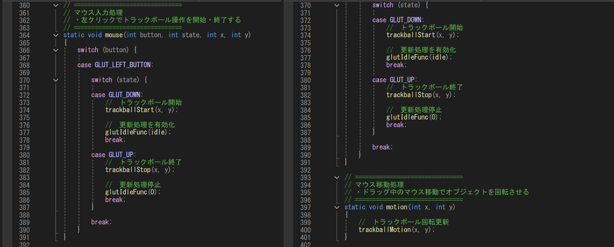
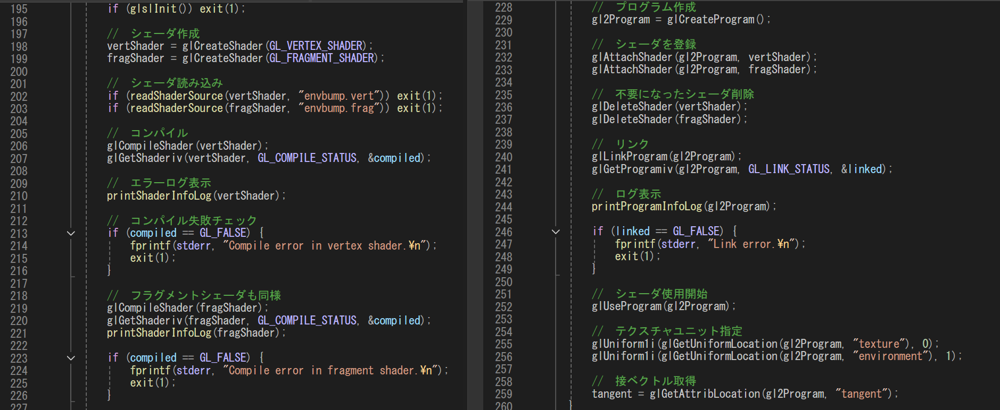
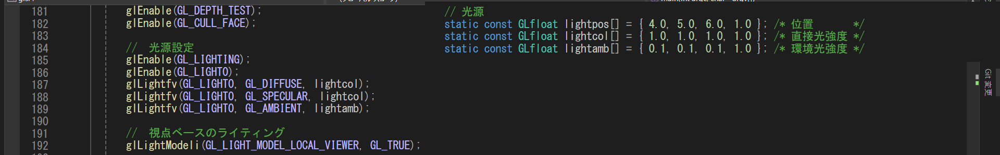
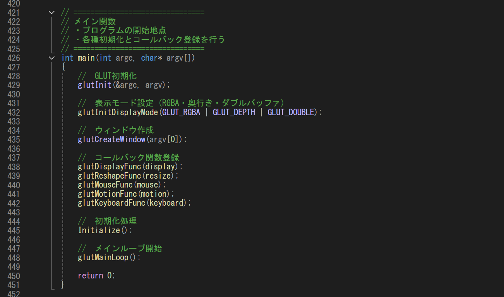

学習したこと（調べ、学んだこと）
マウス操作・視点制御（トラックボール）について
マウス入力をもとに、物体の回転を制御する処理です。
クリックで操作開始・終了を切り替え、動きを管理しています。
トラックボール処理を使うことで、ドラッグに応じて自然に回転します。
これにより、ユーザーが直感的に視点を動かせるようになります。


シェーダー処理とは
シェーダーは、物体の見た目を決める処理です。頂点の位置や、ピクセルごとの色の付き方を制御します。
外部ファイルから読み込んで、エラーがないか確認してから使用します。これにより、
光の当たり方や質感をリアルに表現できるようになります。

ライティング表現（光沢・反射・金属感）に関して
光の当たり方によって、物体の見た目を変える処理です。光源や色の設定を行い、明るさや影を表現しています。
さらに、反射やテカりを加えることで金属のような質感を再現しています。これにより、立体感のあるリアルな見た目になるようにしています。

コールバック関数登録とは
特定のタイミングで処理を自動的に呼び出す仕組みです。描画・入力・画面サイズ変更などに応じて関数が実行されます。
どの処理を使うかをあらかじめ登録しておく形になります。これにより、イベントに応じてプログラムが動くようになります。
